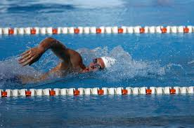
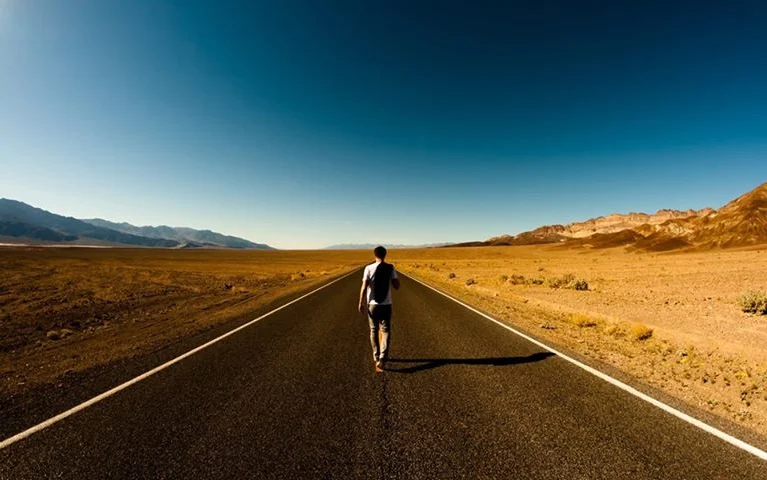
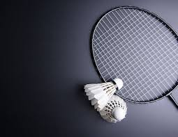
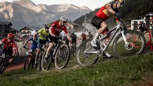

Inapoi
Hobby-urile mele principale
Inotul
Înotul sportiv, competițional, sau de performanță,
este un sport nautic ce constă în parcurgerea
anumitor distanțe în timp cât mai scurt într-un
procedeu sportiv de înot, în bazine
de înot special amenajate.
Înotul sportiv, competițional, sau de performanță,
|

|
Mai multe informatii despre inot
|
Calatoria
Pentru mine călătoria reprezintă o evadare din cotidian,
din rutina de zi cu zi şi o nouă ocazie de a explora
lucruri noi.Apreciez fiecare călătorie ca pe o nouă
experienţă, chiar dacă am mai fost în locul respectiv.
Sunt întotdeauna relaxată, mă incluzându-mă şi pe mine,
călătoria reprezintă un stil de viata, plin de fericire,
libertate, noutate si nu in ultimul rand cunoastere.
|

|
Mai multe informatii despre Turism
|
Badminton
Badmintonul este unul dintre cele mai vechi sporturi din lume.
din lume. Badminton-ul este un sport în care doi jucători
, plasați de o parte și cealaltă a unui fileu, încearcă
să treacă fluturașul peste fileu în terenul advers.
Acest sport are nevoie de atentie precizie si putere.
|

|
Mai multe informatii despre Badminton
|
Drumetii Montane
Drumeția este o activitate în aer liber care constă
în mersul pe jos, în medii naturale, de multe
ori în zone muntoase sau alte zone pitorești.
Adesea oamenii fac astfel de drumeții, pe
trasee special concepute pentru acest gen
de recreere, numite și trasee de drumeție.
|

|
Mai multe informatii despre Drumetii
|
Ciclismul
Ciclismul este, în sensul larg al cuvântului,
deplasarea pe sol folosind mijloace de transport
puse în mișcare de mușchii omului, cu precădere
bicicletele. Ca sport, ciclismul condus de
trasee special concepute pentru acest gen
|

|
Mai multe informatii despre Ciclism
|